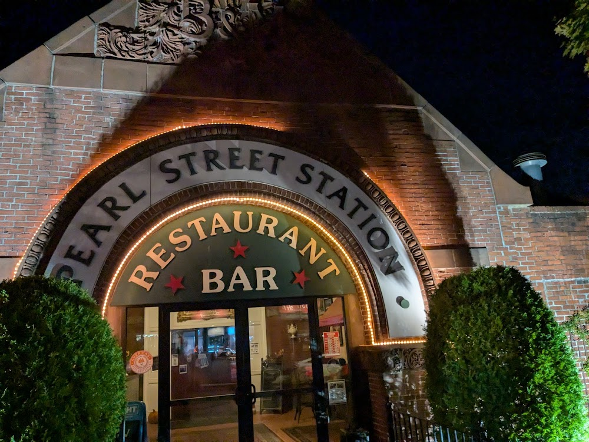

Pearl Street Station is a five minute walk from my house. They do some of the best brick oven pizza I have ever had for two dollars a slice — cheese, no ceremony — and the beer comes in big cheap glasses that encourage you to stay longer than you intended. I have been going there ever since I moved to Malden. The building is a converted train station, all old dark wood inside, and you can hear the train rattle past, and you think, briefly, about where it's going and whether you should be on it — no matter the destination, no matter what you'd be leaving behind. The destination is Boston, but still.
I regularly work there after five to get some extra code or design work done as I hit Ballmer's peak. It houses an array of odd regulars with whom I meet eyes with briefly and give nods back and forth until we return to pondering the void held within our beer glasses. We do not speak. We have an understanding.
Chief among these regulars is Tony. Tony is an old veteran — Vietnam, I assume — who always occupies the same chair next to the bar. I have rarely been into Pearl Station and not found him in his spot. I am fairly sure he doesn't pay, and that the bar keeps him with drink as more of an attraction than a patron. God knows the regulars all love him. I often wonder what he thinks sitting there all day — whether he people watches, whether he dissects what their worries or troubles may be. What would he think of me, who he has only ever seen come in to eat pizza or wings. Why the switch to clam chowder. Why now. What's gone wrong in my life to bring me to this point — has my fiancé found out about the blog and left me? I wonder if Tony would be proud of this blog.
Anyways, back to chowder.
I ordered the chowder.
Three minutes. I want you to sit with that. Three minutes is not a chowder being made — that is a chowder being retrieved. Somewhere in the back of Pearl Street Station there is a pot that has not stopped boiling since at least the late nineties, a perpetual vat humming along between services, between closing times, possibly through the night with no one watching, the train rattling past outside, the stew eternal and undisturbed. The bowl arrived just above lukewarm.
Then they gave me two cracker packets.
Two.
I have no idea if this is because I am a regular or if this is standard procedure for all patrons — I have no intelligence on this matter and I was not going to ask. I'm not sure I want to know. What I know is that this single act of cracker generosity is doing the heavy lifting for this entire review. Alone, this chowder is a 4/10 and a disappointed walk home. With two packets, the calculus shifts entirely.
The taste was quite clammy — more clammy than usual, which I didn't dislike. A step up from the last tasteless bowl I had (see Estella review). Three ingredients: broth, clams, potatoes. There was a wealth of clams, which is not a complaint — the clams were doing their job admirably. The potatoes, however, had failed to show up in sufficient numbers. A potato shortage in a clam chowder is a quiet moral failing, a crack in the foundation. The consistency sat a point above oily, just crossing the threshold into creamy — passing in my book, but certainly not what I am looking for.
This chowder was just above the consistency of soup. I think about this more than I probably should. Chowder exists on a spectrum — on one end, the thin oily broths that insult the clam and everyone in the room, on the other, the thick creamy monuments to patience and rendered fat that reward the faithful. In between is a vast purgatory of almost-chowders, soups that reached for something greater and didn't quite get there. There is a threshold that separates chowder from soup and it is not merely texture — it is intent. A soup happens. A chowder is willed into existence. This one was hovering somewhere in the middle, not fully committed to what it wanted to be. Good purgatory, if such a thing exists. But purgatory.
Let's now turn to one of the most important accoutrements of Chowder, the crackers. The second you put all the crackers in — both packets, don't ration them — something shifted. The crackers did what the kitchen couldn't, thickening the broth, bridging the gap between soup and something that actually meant it. It crossed the threshold. Briefly, and with outside help, but it crossed it into something resembling an average chowder I have come to expect but seldom find.
4/10 — upgraded to 5/10 with two packets of crackers.